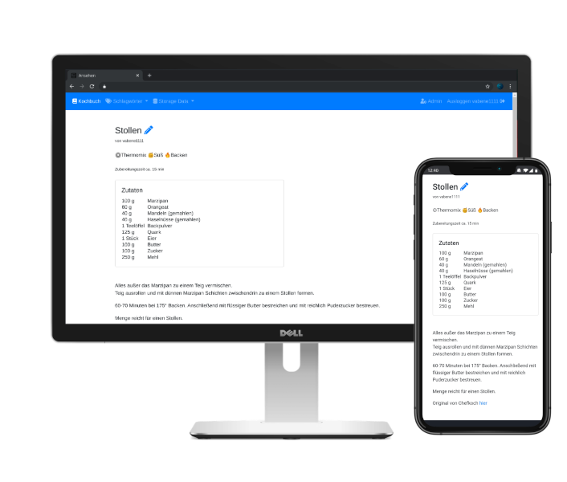

Tandoor Recipes
The recipe manager that allows you to manage your ever growing collection of digital recipes.


Website • Installation • Docs • Demo • Discord

Core Features
- 🥗 Manage your recipes with a fast and intuitive editor
- 📆 Plan multiple meals for each day
- 🛒 Shopping lists via the meal plan or straight from recipes
- 📚 Cookbooks collect recipes into books
- 👪 Share and collaborate on recipes with friends and family
Made by and for power users
- 🔍 Powerful & customizable search with fulltext support and TrigramSimilarity
- 🏷️ Create and search for tags, assign them in batch to all files matching certain filters
- ↔️ Quickly merge and rename ingredients, tags and units
- 📥️ Import recipes from thousands of websites supporting ld+json or microdata
- ➗ Support for fractions or decimals
- 🐳 Easy setup with Docker and included examples for Kubernetes, Unraid and Synology
- 🎨 Customize your interface with themes
- 📦 Sync files with Dropbox and Nextcloud
All the must haves
- 📱Optimized for use on mobile devices
- 🌍 localized in many languages thanks to the awesome community
- 📥️ Import your collection from many other recipe managers
- ➕ Many more like recipe scaling, image compression, printing views and supermarkets
This application is meant for people with a collection of recipes they want to share with family and friends or simply store them in a nicely organized way. A basic permission system exists but this application is not meant to be run as a public page.
Your Feedback
Share some information on how you use Tandoor to help me improve the application Google Survey
Get in touch
| Discord | We have a public Discord server that anyone can join. This is where all our developers and contributors hang out and where we make announcements |
| You can follow our Twitter account to get updates on new features or releases |
Roadmap
This application has been under rapid development over the last year. During this time I have learnt a lot and added tons of features, I have also moved to some new technologies like Vue.js. This has led to some great features but has left the Quality unsatisfactory in regard to the details and technical implementation.
So in addition to the new Features and Ideas which can always be found in the Issues & Milestones there are some greater overall goals for the future (in no particular order)
- Improve the UI! The Design is inconsistent and many pages work but don't look great. This needs to change.
- I strongly believe in Open Data and Systems. Thus adding importers and exporters for all relevant other recipe management systems is something i really want to do.
- Move all Javascript Libraries to a packet manger and clean up some of the mess I made in the early days
- Improve Test coverage and also the individual tests themselves
- Improve the documentation for all features and aspects of this project and add some application integrated help
About
This application has originally been developed to index, tag and search my collection of digital (PDF) recipes. Over the time tons of features have been added making this the most comprehensive recipe management system.
I am just a single developer with many other interests and obligations so development and support might be slow at times, but I try my best to constantly improve this application.
If you have any wishes, feature requests, problems or ideas feel free to open an issue on GitHub.